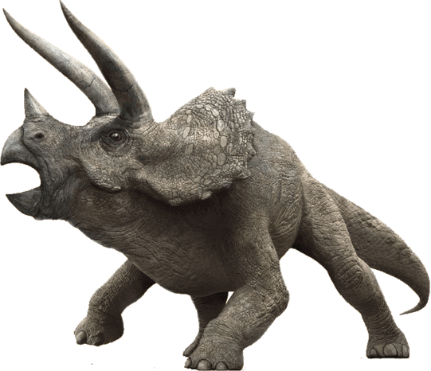

Triceratops
Three Horned Face
Diet: Herbivore
Triceratops was a very common dinosaur which lived at the very end of the Cretaceous period. It had a huge frilled head with horns over each eye that could reach over 4 feet long.
Triceratops had a third, smaller horn on its nose. These would be fearsome weapons against a predator.
Triceratops is one of the most common dinosaur fossils found. More than 50 skulls have been found. Within the genus, at least 7 species have been identified. Triceratops is the largest member of this family, reaching the size of a school bus.